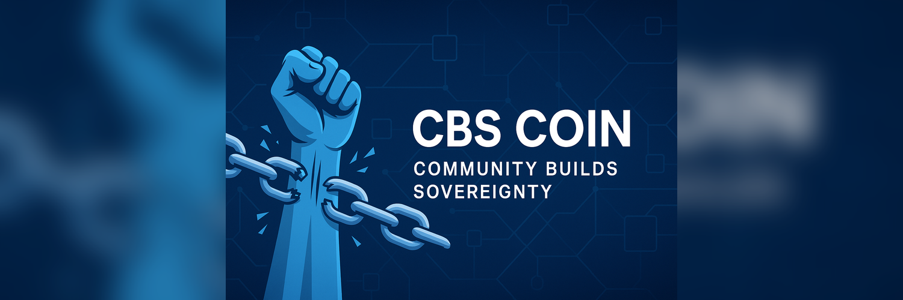

CBS — Community Builds Sovereignty
What is CBS Coin?
CBS Coin is a meme with a serious message: Community Builds Sovereignty. It’s a fair-launch SPL token on Solana—no presale, no insiders—built by one developer and steered by holders. Think of it as a live experiment in bottom-up coordination: small budgets, measurable outcomes, transparent on-chain proofs. A community project, for and by the community.